인공지능의 기본 개념
인공지능은 결국 “함수”다. 규칙 기반 접근에서 머신러닝, 인공신경망, 딥 러닝으로 이어지는 흐름을 따라가며, 인공지능이 무엇을 할 수 있고 무엇을 할 수 없는지 이해한다.
인공지능 기술의 발전
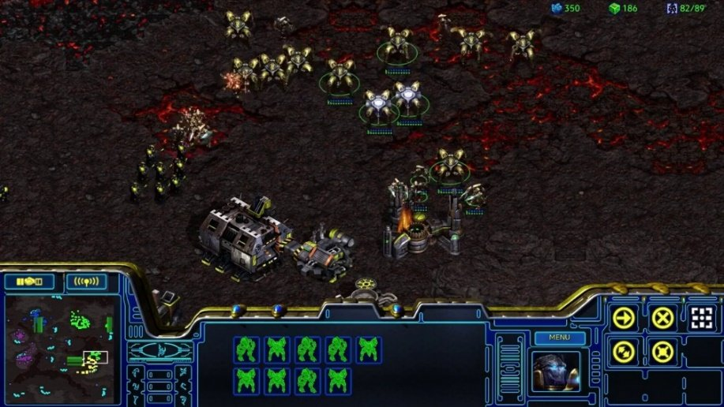
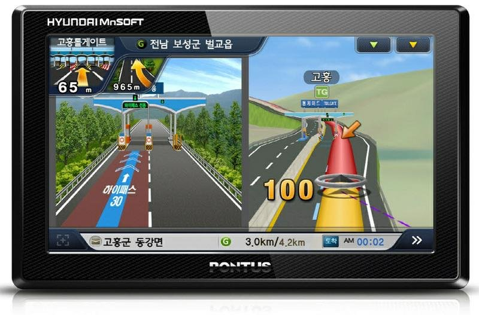
10년 동안 어떠한 기술 발전이 있었던 것일까?
용어부터 정리하기
- 인공지능 (Artificial Intelligence)
- 머신러닝 (Machine Learning)
- 인공신경망 (Neural Networks)
- 딥 러닝 (Deep Learning)
네 용어는 서로 별개의 것이 아니라 포함 관계에 있다. 이 강의는 바깥쪽부터 안쪽으로 한 겹씩 들어간다.
인공지능
가장 바깥 층. “인공지능”이라는 말이 실제로 무엇을 가리키는지부터 정리한다.
인공지능 = 함수
인공지능은 입력 변수를 받아 출력 변수를 내놓는 함수로 볼 수 있다.
인공지능 = 함수
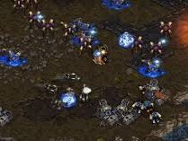
(주변 맵 정보)
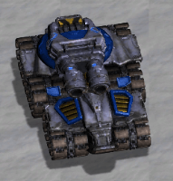
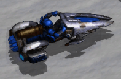
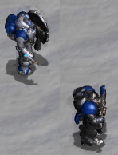
(어느 유닛을 공격하지?)
인공지능 = 함수
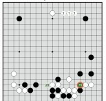
(현재 바둑판 기보)
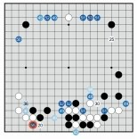
(다음에 놓을 수)
“인공지능”의 구현 = 함수 찾기
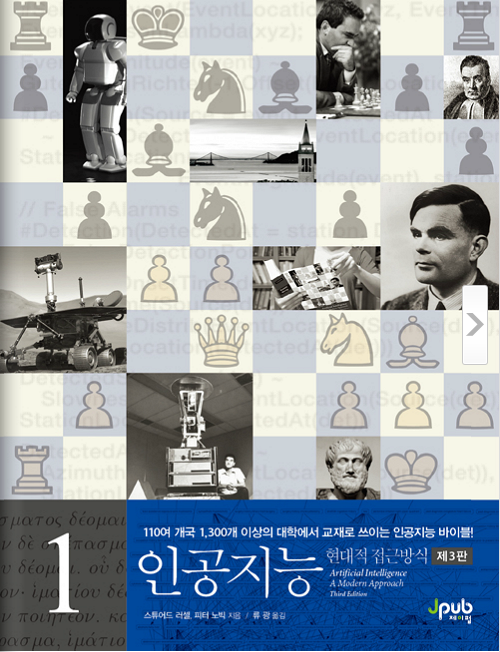
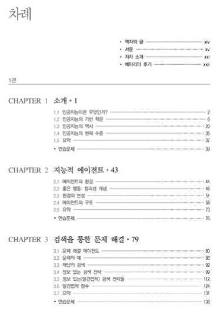
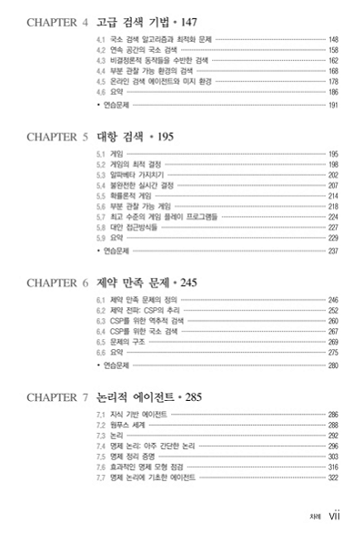
교과서의 차례는 곧 “함수를 찾아내는 여러 방법”의 목록이다 — 검색, 제약 만족, 논리 추론, 계획 수립, 지식 표현, 그리고 머신러닝.
“인공지능”의 구현 방식
탐색
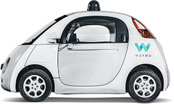
➜ 알파고, 자율주행차 등 최근의 성과는 대부분 머신러닝 방식규칙기반 접근 (Rule-based Approach)
(주변 맵 정보)
(어느 유닛을 공격하지?)
- 공격 규칙 (rule)
- 상대방 공격 유닛 > 상대방 비공격 유닛
- 공격력 강한 유닛 > 공격력 약한 유닛
- 가까운 유닛 > 먼 유닛
- …
전문가 시스템
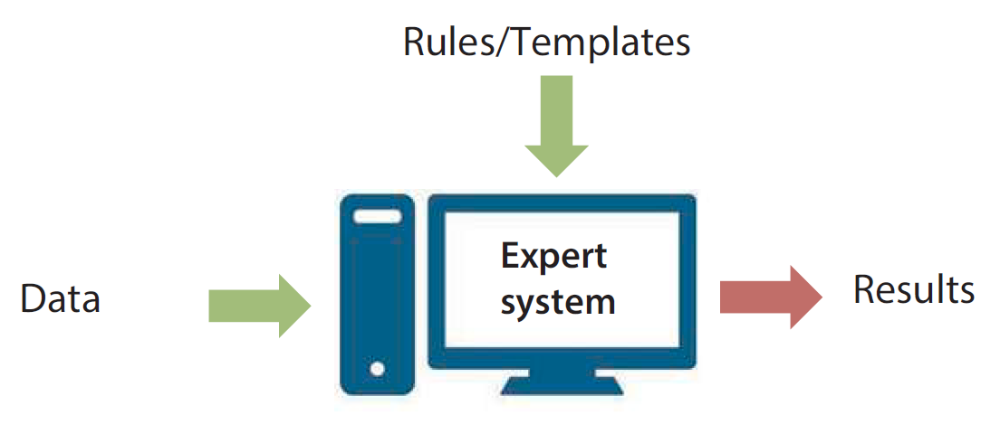
- MYCIN (1975) – 항생제 처방 추천
- 100여 가지 박테리아 감염 정보 저장
- 증상, 상태, 치료 이력, 검사 결과 등 입력
- 감염 여부·박테리아 유형 판단, 치료법 추천
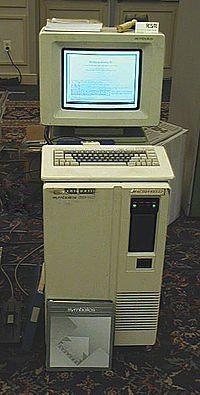
법률 전문가 시스템 (expert system)
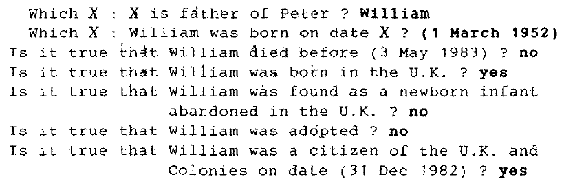
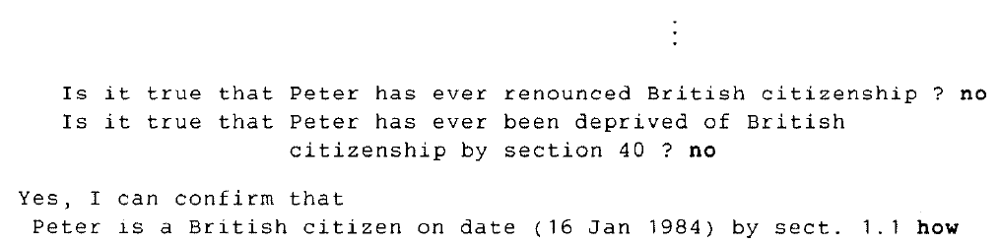
- 한계
- 저장된 규칙의 수가 200 내지 300건에 이르면 실행 성능이 저하
- 관리자가 규칙을 일일이 유지 관리하는 것이 사실상 불가능
머신러닝 방식
(주변 맵 정보)
(어느 유닛을 공격하지?)
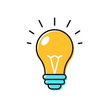
프로게이머들의 플레이 방식을 배워보면 어떨까?데이터를 학습하는 인공지능 = 머신러닝 (Machine Learning)
머신러닝의 활용 – 알파고
(현재 바둑판 기보)
(다음에 놓을 수)
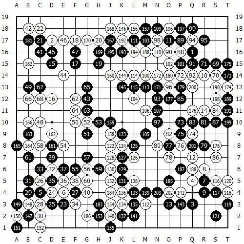
수많은 프로 기사의 기보(입력–출력 쌍)를 학습하여 “다음 수”를 내놓는 함수를 찾아냄
인공지능의 구분
- 인간이 할 수 있는 지적 작업을 이해하거나 학습
- 강(强) 인공지능
- 특정한 작업을 이해하거나 학습
- 약(弱) 인공지능
AI Apocalypse
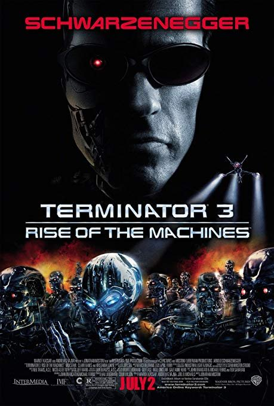
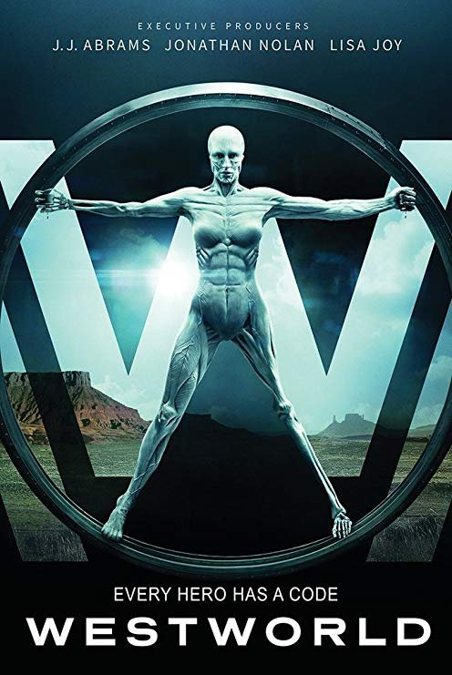
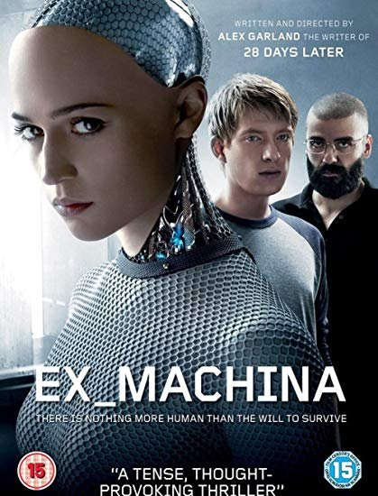
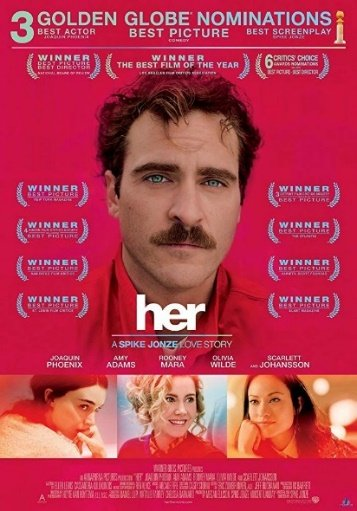
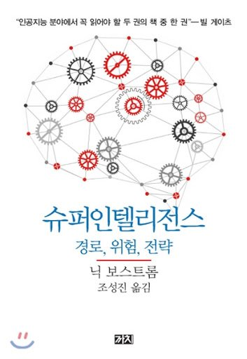
대중문화 속 인공지능은 대부분 AGI(강 인공지능)의 모습이다.
이번 강의의 주제 = ANI
ANI의 활용 사례
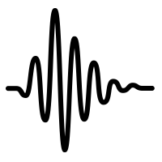
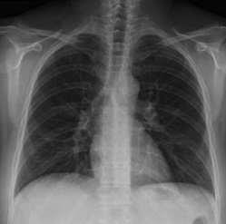
음성 인식, 기계 번역, 의료 영상 판독 — 모두 “입력을 출력으로 대응시키는 함수”다.
머신러닝
데이터로부터 함수를 찾아내는 방법. 가장 단순한 예인 선형 회귀로 원리를 이해한다.
머신러닝 = 데이터로부터 함수 찾기
- 아주 간단한 사례 – 데이터
- 입력 값: 아파트 면적
- 출력 값: 아파트 가격
- 문제: 입력 값과 출력 값의 관계는?
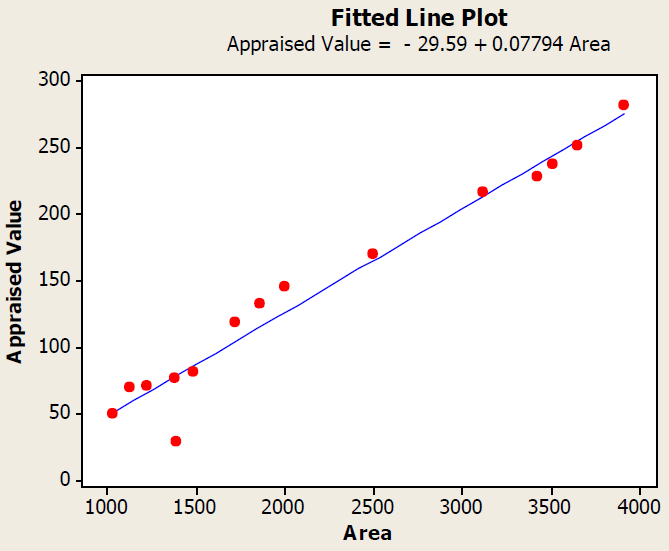
단순 선형 회귀
- 가설(Hypothesis): 주어진 데이터를 표현하는 함수
- 단순 선형 회귀의 가설
- 컴퓨터에게 시킬 일
- 주어진 데이터를 가장 잘 표시하는 a 값과 b 값을 찾는 것!
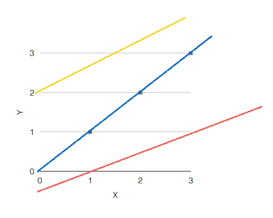
예제 데이터
| 데이터 x | 데이터 y |
|---|---|
| 0 | 0 |
| 1 | 2 |
| 2 | 4 |
| 3 | 6 |
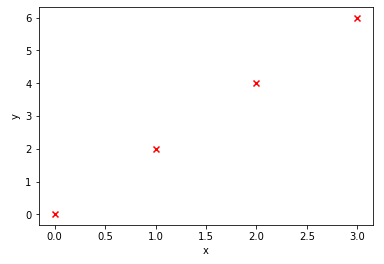
문제: x와 y 사이의 관계는?
하지만 컴퓨터는 직관적으로 알 수가 없음
“겐또”라는 말을 아시나요?
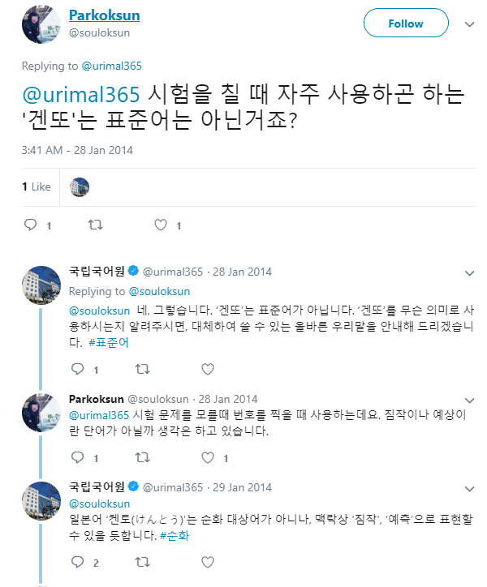
가설의 비용
- 오차 = 컴퓨터가 세운 가설과 실제 데이터 사이의 차이를 제곱 [가설이 y = 0.5x인 경우의 예시]
| 데이터 x | 데이터 y | 가설 ŷ = 0.5x | 오차 y − ŷ | 오차의 제곱 (y − ŷ)² |
|---|---|---|---|---|
| 0 | 0 | 0 | 0 | 0 |
| 1 | 2 | 0.5 | 2 − 0.5 = 1.5 | 2.25 |
| 2 | 4 | 1.0 | 4 − 1 = 3.0 | 9.0 |
| 3 | 6 | 1.5 | 6 − 1.5 = 4.5 | 20.25 |
- 오차의 평균 (= 가설의 비용)
Cost = {(0 − 0)² + (2 − 0.5)² + (4 − 1.0)² + (6 − 1.5)²}4 = 7.875
머신러닝 학습 방법
- 단순한 학습 방법 – 가설을 조금 바꿔보기 [가설이 y = 0.4x인 경우의 예시]
| 데이터 x | 데이터 y | 가설 ŷ = 0.4x | 오차 y − ŷ | 오차의 제곱 (y − ŷ)² |
|---|---|---|---|---|
| 0 | 0 | 0 | 0 | 0 |
| 1 | 2 | 0.4 | 2 − 0.4 = 1.6 | 2.56 |
| 2 | 4 | 0.8 | 4 − 0.8 = 3.2 | 10.24 |
| 3 | 6 | 1.2 | 6 − 1.2 = 4.8 | 23.04 |
- 오차의 평균 (= 가설의 비용)
Cost = {(0 − 0)² + (2 − 0.4)² + (4 − 0.8)² + (6 − 1.2)²}4 = 8.96
머신러닝 학습 방법
- 단순한 학습 방법 – 가설을 조금 바꿔보기 [가설이 y = 0.6x인 경우의 예시]
| 데이터 x | 데이터 y | 가설 ŷ = 0.6x | 오차 y − ŷ | 오차의 제곱 (y − ŷ)² |
|---|---|---|---|---|
| 0 | 0 | 0 | 0 | 0 |
| 1 | 2 | 0.6 | 2 − 0.6 = 1.4 | 1.96 |
| 2 | 4 | 1.2 | 4 − 1.2 = 2.8 | 7.84 |
| 3 | 6 | 1.8 | 6 − 1.8 = 4.2 | 17.64 |
- 오차의 평균 (= 가설의 비용)
Cost = {(0 − 0)² + (2 − 0.6)² + (4 − 1.2)² + (6 − 1.8)²}4 = 6.86
머신러닝 = 오차의 최소화
- 예시 데이터
- a 값이 0.5일 때 오차 평균 = 7.875
- a 값이 0.4일 때 오차 평균 = 8.96
- a 값이 0.6일 때 오차 평균 = 6.86
- 컴퓨터는 a 값을 늘려야 할까? 줄여야 할까?
- a 값이 증가하면 오차가 줄어듦
- a 값을 더 증가시키면서 위 과정을 계속 반복함
- 비용 함수 (cost function)
- 주어진 데이터에 가설을 적용했을 때 그 오차를 함수로 표현한 것
- 손실 함수(loss function) 또는 목적 함수(objective function)라고도 함
- 머신러닝의 목적
- 비용함수를 최소화하는 a, b 값을 찾는 것!
다중 선형 회귀
- 하나의 변수(x)만으로 결과(y)를 설명할 수 있는 경우는 거의 없음
- 다중 선형 회귀: 다수의 x 변수를 이용해서 y 값을 예측하기
- 예시 – 아파트 가격 (y)
- x1 = 아파트 평수
- x2 = 방 개수
- x3 = 층 수
| x1 (평) | x2 (개) | x3 (층) | y (억) |
|---|---|---|---|
| 18 | 2 | 5 | 2.1 |
| 32 | 3 | 10 | 3.4 |
| … | … | … | … |
| 48 | 4 | 3 | 5.8 |
다중 선형 회귀
- 가설을 세워 보자!
- 비용 함수
- 가설의 예측 값과 학습 데이터 간의 오차의 제곱값을 평균
- 가중치 찾기
- w1, w2, w3, b 값을 조금씩 바꿔 가면서 비용 함수를 최소화하는 w1, w2, w3, b 값 찾기
응용 사례 – 와인 가격 예측하기
- 프린스턴 대학 경제학자는 와인 가격을 예측하는 선형회귀 모델을 개발
- 입력 변수
- 와인 빈티지 (나이)
- 포도 성장기의 날씨
- 수확철의 강수량
- 겨울철의 강수량
- …
- 출력 변수
- 와인의 경매 가격
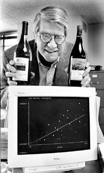
와인 평론가의 반응
“영화 평론가가 영화를 보지 않고서 배우와 감독만 보고 그 영화가 좋은지 알 수 없는 것과 마찬가지로 [데이터로 와인 가격을 예측하는 것]은 완전히 사기이다.” – 로버트 파커 (세계적으로 저명한 와인 평론가)
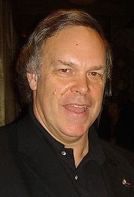
와인 가격 예측하기 – 결과
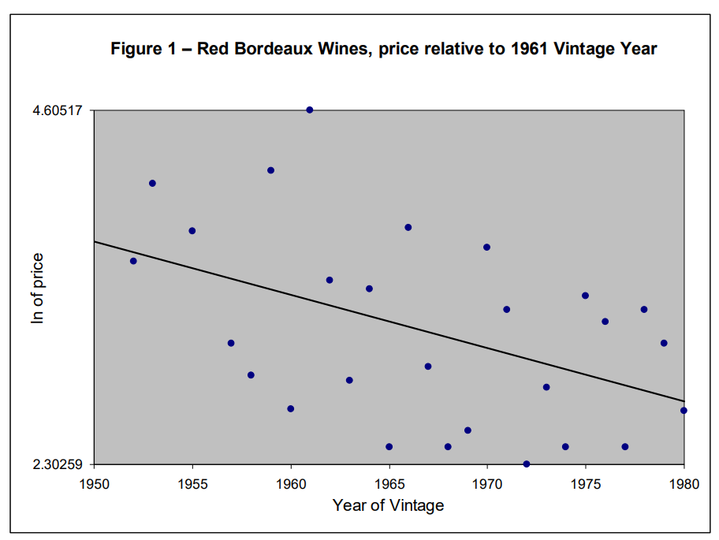
일부 전문가들보다 오히려 경매 가격을 더 정확히 예측!
머신러닝의 기본 개념
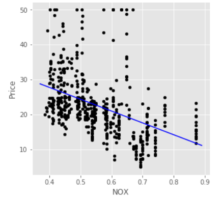
이게 다 인공지능과 무슨 상관이지…
인공신경망
선형 회귀 모델을 “뉴런”으로 바꿔 부르고, 뉴런을 여러 층으로 쌓으면 인공신경망이 된다.
단순 선형회귀 모델
| Input x | Output y |
|---|---|
| 아파트 면적 | 아파트 가격 |
인공 뉴런 (Artificial Neuron)
| Input x | Output y |
|---|---|
| 아파트 면적 | 아파트 가격 |
선형회귀 모델과 똑같은 구조를 “뉴런”이라고 부르기로 하자.
인공 뉴런 (Artificial Neuron)
인공 뉴런 (Artificial Neuron)
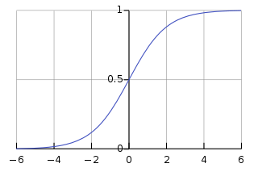
선형(linear)이 아닌 함수도 학습 가능!
인공 뉴런 (Artificial Neuron)
| Input x1 | Input x2 | Input x3 | Output y |
|---|---|---|---|
| 아파트 면적 | 방 개수 | 교통 편의성 | 아파트 가격 |
방 개수
교통 편의성
실제 뉴런 vs 인공 뉴런
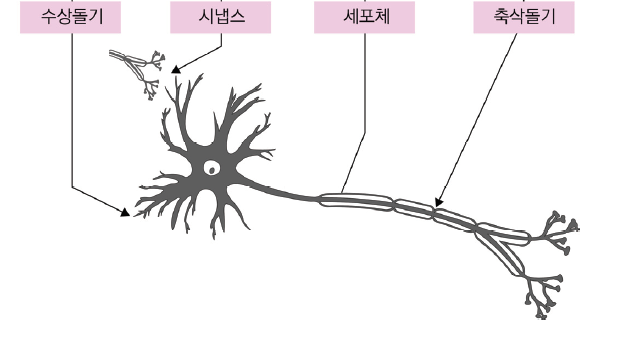
인공신경망이란?
- 인공 뉴런을 여러 단위로 쌓은 네트워크
- 인공신경망 = 복잡한 함수 표현의 일종
초기의 (아날로그) 인공 신경망
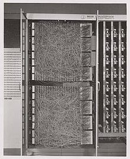
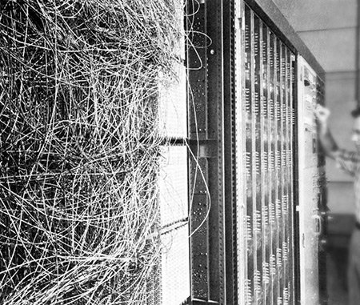
Mark I Perceptron (1958) — 가중치를 전위차계(가변 저항)로 구현하고, 모터로 손잡이를 돌려 가중치를 조정했다.
Universal Approximation Theorem
- Universal Approximation Theorem
- “In the mathematical theory of artificial neural networks, the universal approximation theorem states that a feed-forward network with a single hidden layer containing a finite number of neurons can approximate continuous functions on compact subsets of Rn, under mild assumptions on the activation function.” (Wikipedia)
인공신경망의 잠재력
- Universal Approximation Theorem
- 세상 만사를 수치화할 수 있고, 그렇게 수치화된 변수들의 관계를 어떤 함수로 표현할 수 있다고 가정해 봄
- 컴퓨터로 다수의 뉴런으로 구성된 인공 신경망을 구축함
- 만약 머신러닝의 반복을 통해 가중치를 찾아 낼 수 있다면, 인공 신경망은 세상의 어떠한 함수라도 근사해 낼 수 있음
- 이것은 세상 만사를 컴퓨터로 근사해 낼 수 있다는 뜻!
인공신경망과 머신러닝
Quiz 위 인공신경망은 가중치(w1, w2, …)를 몇 개나 학습해야 할까? (b 제외)
인공신경망과 머신러닝
Quiz 위 인공신경망은 가중치(w1, w2, …)를 몇 개나 학습해야 할까? (b 제외)
- 각 뉴런의 연결 선마다 서로 다른 가중치가 존재
- Input layer → 1st hidden layer: 3 × 3 = 9개 (w11, w12, w13, w21, …, w33)
- 1st hidden layer → 2nd hidden layer: 3 × 2 = 6개 (w11, w12, w21, w22, w31, w32)
- 2nd hidden layer → output layer: 2 × 1 = 2개 (w1, w2)
인공신경망 학습 방법 = 머신러닝 학습 방법
- 단순 선형 회귀: a, b 값을 바꿔 가면서 가설의 예측치와 학습 데이터 간 오차를 최소화하는 a, b를 찾음
- 인공 신경망: w 값들을 바꿔 가면서 인공 신경망의 예측치와 학습 데이터 간 오차를 최소화하는 w를 찾음
선형회귀 가중치 학습법과 기본 원리는 동일
예제 – 필기숫자인식
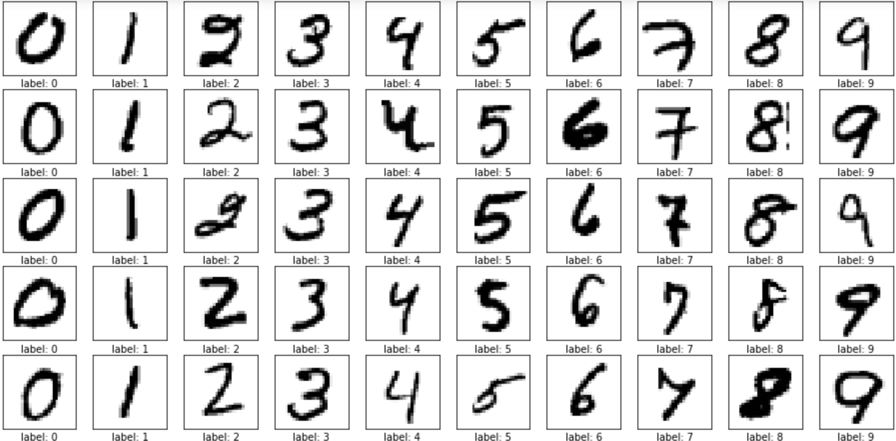
- 미국 국립표준기술연구소(NIST)가 수집한 미국인들의 필기숫자 데이터
- 총 6만 건(숫자 1개당 6천 건)의 데이터
필기숫자를 숫자로 표현하면?
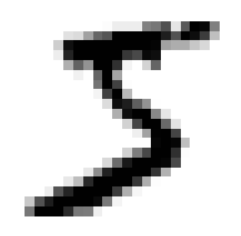
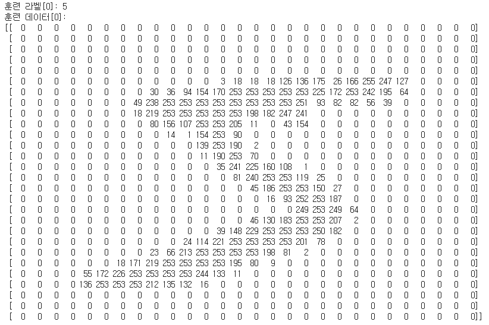
필기숫자인식 인공신경망
784개
10개
딥 러닝
인공신경망을 아주 깊게 쌓으면 훨씬 복잡한 함수를 표현할 수 있다. 그것이 왜 최근에야 가능해졌는가.
더 어려운 문제
- ImageNet 사물 식별 문제
- 1,400만 건 이상의 이미지 데이터 (평균 이미지 크기 482×418)
- 20,000개 이상의 카테고리로 분류
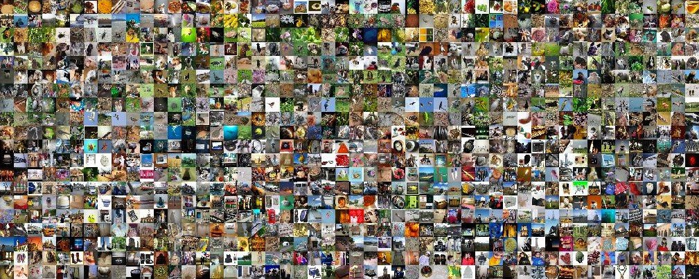
인공신경망으로 사물을 식별하려면?
65,536개
(20,000개)
입력이 6만 5천 개, 출력이 2만 개. 얕은 신경망으로는 이 관계를 표현하기 어렵다.
딥 러닝 (Deep Learning)의 개념
딥 러닝 = 심층 인공신경망 학습 방법
65,536개
(256×256)
- 고양이 0.85
- 개 0.11
- 호랑이 0.03
- …
딥 러닝의 어려움
65,536개
(256×256)
- 고양이 0.85
- 개 0.11
- 호랑이 0.03
- …
(20,000개)
학습해야 할 가중치가 너무 많다!
이 문제를 어떻게 해결했을까?
수많은 가중치를 학습시키기 위해 많은 연산이 소요
연산 능력의 향상
수많은 가중치를 학습시키기 위해 많은 데이터가 필요
빅데이터 시대의 도래
수많은 가중치를 학습시키기 위해 효율적인 계산 방법이 필요
인공신경망 알고리즘의 발전
(1) 연산 능력의 향상 – 무어의 법칙
무어의 법칙 – “매 2년마다 반도체 집적회로의 성능이 2배로 증가한다”
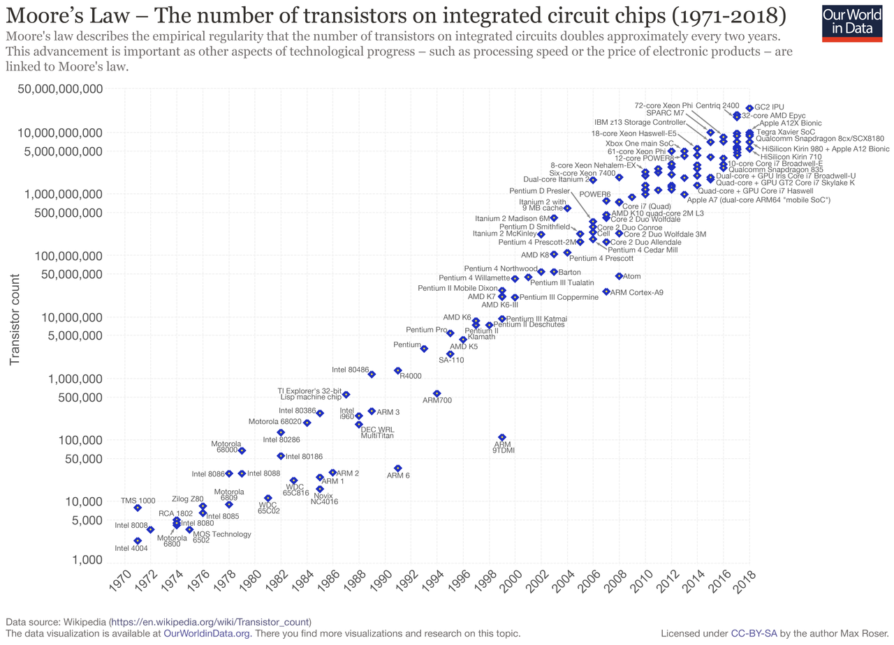
(1) 연산 능력의 향상 – GPU의 활용
그래픽 처리 장치(Graphics Processing Unit, GPU) 인공신경망 학습 계산 용도에 적합!
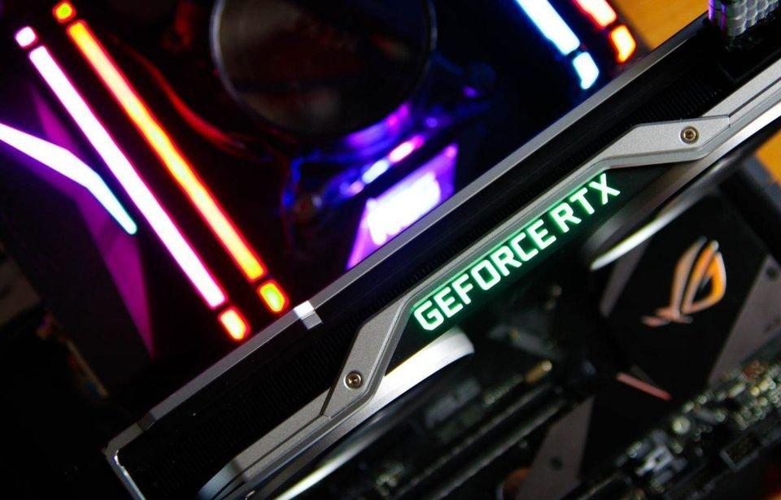
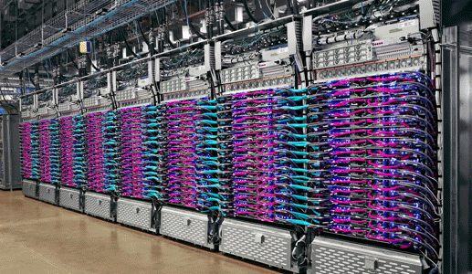
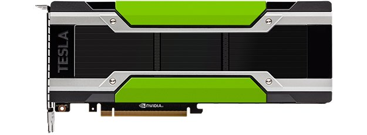
https://www.forbes.com · https://cloud.google.com · https://www.nvidia.com
(2) 빅데이터 시대의 도래
- 빅데이터의 3V
- Volume (양)
- Variety (다양성)
- Velocity (속도)
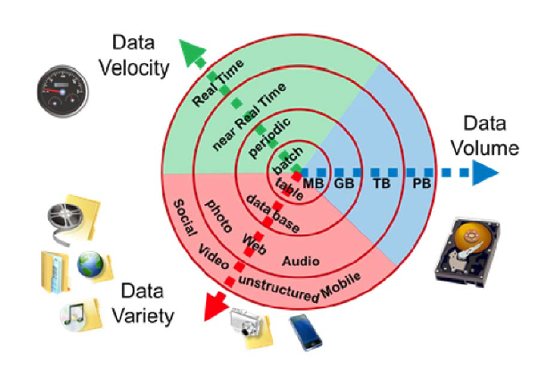
빅데이터 학습 데이터의 구축
- ImageNet 데이터 예시
- 2006년 Fei-Fei Li 교수가 시작
- 대규모 데이터베이스 축적 & 수작업으로 건건이 이미지 분류
- “빅데이터 축적을 통해 이미지 인식 인공지능의 성능을 향상시키자!”
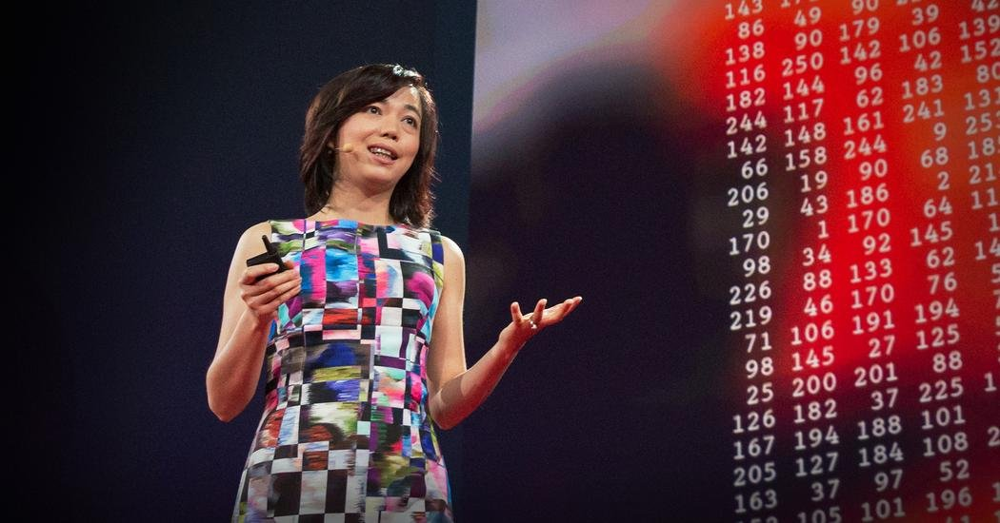
(3) 새로운 알고리즘의 발전
- 20세기까지의 혁신 기술 – 특허를 통해 보호
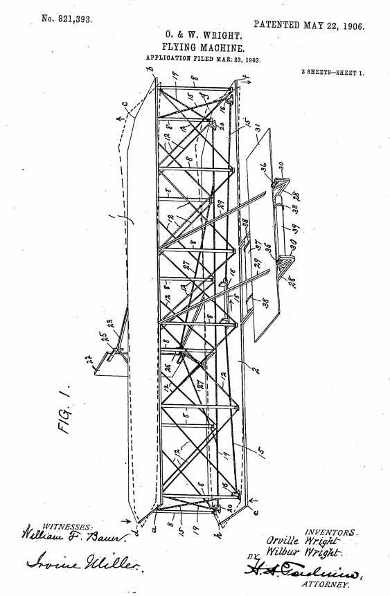
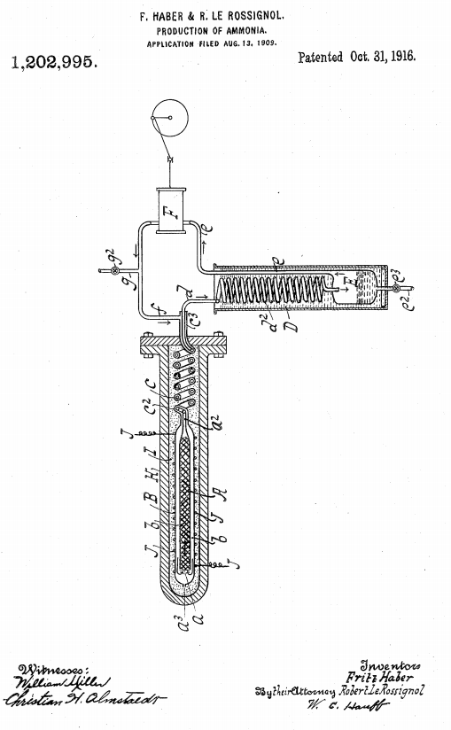
기술의 공유와 확산
연구 성과의 공유
경진대회를 통한 경쟁
- Netflix Prize – Netflix의 알고리즘을 10% 개선 시 100만 달러
- 학습 데이터
- <user, movie, date of grade, grade(1~5)> 100,480,507건
- 이용자 – 480,189명 (익명), 영화 – 17,770개
- 이용자당 평균 200개 영화 평가
- 영화당 평균 5,000 이용자 평가
- 평가 데이터
- Quiz set: <user, movie, date of grade, grade(1~5)> 1,408,342건 (순위표)
- Test set: <user, movie, date of grade> 1,408,789건 (최종 평가)
- 평가 방법
- 이용자 평가 결과와의 평균 제곱근 오차 (Root Mean Square Error, RMSE)
- 학습 데이터
- 참가자
- 186개국 41,305팀 51,051명 참가
Netflix Prize 순위표
Netflix Prize 결과
3년에 걸친 경쟁 끝에 2009년 BellKor’s Pragmatic Chaos 팀이 10.09% 개선으로 100만 달러를 수상
경진대회 사이트
Kaggle – 실시간 순위표 (Leaderboard)
인공지능 학습 사이클
Kaggle 등 다양한 경진대회➜ 동기 부여
GitHub에 공개된 소스코드➜ 실습을 통한 학습
연구 논문 실시간 공유➜ 최신 이론 전파
새로운 이론은 다시 경진대회에서 검증된다 — 선순환
Challenge
- ImageNet 데이터를 이용하여 사물을 식별하기
- 2010년 오류율 28%, 2011년 오류율 26%
- 과연 컴퓨터가 사물을 인식할 수 있을까? 불가능한 도전은 아닐까?
Challenge
사람보다 더 정확하게 사물을 식별!
인공지능 기술 공유 시대의 종말?
- 최근 일부 대규모 언어모형 인공지능은 더 이상 기술 상세정보를 공개하지 않음
- 영업상의 이익
- 악의자의 오용 방지
- 예시 – GPT-4 기술 보고서
- 경쟁 환경(competitive landscape)과 안전에의 함의(safety implications)를 고려하여 아키텍처(모델 크기 등), 하드웨어, 학습 연산, 데이터세트 구성, 학습방법 등에 대한 추가 세부정보를 포함하지 않는다고 명시
요약
- 인공신경망이란?
- 인공 뉴런을 여러 단위로 쌓은 네트워크 = 복잡한 함수의 일종
- 인공 신경망이 하는 일은?
- = 입력 값에 출력 값을 대응(mapping)시키는 것
- 딥러닝이란?
- 인공 신경망을 여러 층으로 구성한 것 = 훨씬 더 복잡한 함수를 표현
미래 인공지능
AI 연구자들은 인간 수준의 기계지능이 언제 올 것이라고 보는가. 전문가 설문조사 결과와 그 해석을 살펴본다.
AI 연구자 2,778명에게 물었다
Thousands of AI Authors on the Future of AI
Katja Grace 외 (AI Impacts), Preprint, January 2024
- 최상위 AI 학회에 논문을 발표한 연구자 2,778명 설문
- 2028년까지 다양한 이정표(결제 사이트를 처음부터 자율 구축, 인기 가수 스타일의 신곡 작곡, LLM 미세조정 등)가 달성될 확률 50% 이상
- 모든 과제에서 기계가 인간을 능가할 확률: 2027년 10%, 2047년 50% — 1년 전 조사보다 13년 앞당겨짐
- 모든 직업이 완전 자동화될 확률: 2037년 10%, 2116년 50% (2022년 조사에서는 2164년)
고수준 기계지능 (HLMI)
- 고수준 기계지능 (High-Level Machine Intelligence, HLMI)
- 정의: 고수준 기계 지능(HLMI)은 인간의 조력을 받지 않는 기계가 모든 과제(task)를 인간 작업자보다 더 저렴하고 더 잘 수행할 수 있을 때 달성됨. 인간이 하는 것이 본질적으로 유리한 과제(예: 배심원으로 인정)는 제외.
- 도입 여부가 아니라 실현 가능성을 고려할 것
- 예측 전제: 인간의 과학 활동이 중대한 부정적 혼란(major negative disruption) 없이 계속될 것
- 결과: 2047년 내 HLMI가 실현될 가능성이 50%로 예상 (50% chance of HLMI by 2047)
- 2022년 설문조사 결과 2060년 (13년 단축)
- 2016년 설문조사 결과 2061년 (14년 단축)
HLMI 도래 가능성
감마 분포 (Gamma Distribution)
- 감마분포
- 어떤 사건이 θ의 시간마다 발생하는 경우, k번째 사건이 일어날 때까지 걸리는 시간을 모델링
- 각 사건은 상호 독립이라고 가정함
- HLMI 달성 시간 예측 모델링
- HLMI 달성에 k개의 기술적 돌파구(breakthrough)가 필요하고, 각 돌파구 달성에 θ년의 시간이 필요
- 설문에 응답한 AI 연구자들은 각기 다른 관념을 가지고 있을 것
- 앞의 그래프는 설문 응답을 통해 각 연구자 내심의 감마분포를 추정, 종합한 결과
AI 전문가 간의 의견 차이
- 2050년까지 90% 이상의 확률로 HLMI가 달성될 것이라는 AI 연구자들
- 작은 k값을 가정 – 현재의 AI 모델 구조가 HLMI 달성에 적합하다고 판단 ➜ 적은 추가 혁신이 필요
- 작은 θ값을 가정 – (현재의 AI 투자 증가 등으로 인해) 중대한 혁신이 자주 일어날 것으로 전망
- 2100년이 되어도 HLMI가 달성될 확률이 50% 미만이라는 AI 연구자들
- 큰 k값을 가정 – 현재의 AI 모델 구조가 HLMI 달성에 적합하지 않다고 판단 ➜ 많은 추가 혁신이 필요
- 큰 θ값을 가정 – HLMI 달성에 필요한 중대한 혁신은 빈번하게 일어나지 않을 것으로 판단
AI 전문가 간의 의견 차이
Geoffrey Hinton at MIT Technology Review’s EmTech Digital
https://www.youtube.com/watch?v=sitHS6UDMJc
https://www.youtube.com/watch?v=RX5N30uIUUA
노동의 완전 자동화
- 노동의 완전 자동화 (Full Automation of Labor, FAOL)
- 어떤 직업(occupation)이 완전히 자동화될 수 있다는 것은 인간의 조력을 받지 않는 기계가 해당 직업을 인간 작업자보다 더 저렴하고 더 잘 수행할 수 있는 경우를 뜻함. 인간이 하는 것이 본질적으로 유리한 직업의 측면(예: 배심원으로 인정)은 제외.
- 도입 여부가 아니라 실현 가능성을 고려할 것
- ‘노동의 완전 자동화’는 모든 직업이 완전히 자동화될 수 있는 때를 뜻함. 즉, 어떤 직업에 있어서도 기계가 인간 작업자보다 더 저렴하고 더 잘 작업을 수행할 수 있는 때를 지칭함.
- 특정 직업의 완전 자동화 가능 시점 예상
- 설문 대상: 트럭 운전사, 외과의사, 소매점 판매원, AI 연구자
노동의 완전 자동화 도래 가능성
- 노동의 완전 자동화 발생 확률이 50%가 되는 시점 예측치는 2116년
- 2022년 설문조사 결과 2164년 (48년 단축)
고수준 기계지능(HLMI) vs 노동 완전자동화(FAOL)
- FAOL 확률 50% 예측은 HLMI 확률 50% 예측보다 60년 이상 늦음
- 2016, 2022, 2023년에서 일관되게 존재하는 차이
- 왜 이러한 차이가 존재하는가?
- FAOL과 HLMI는 유사한 것 – HLMI가 달성된다면 조만간 FAOL이 달성될 수 있어야 함
- 예측의 차이는 프레이밍 효과(framing effect) 때문이라고 볼 수 있음
- “과제(task)” vs “직업(occupation)”의 차이 때문이라고도 볼 여지가 있음
- 답변자들이 질문상의 명시적 요건(도입 여부가 아니라 실현 가능성을 고려할 것)에도 불구하고, 양자를 달리 해석하였을 수도 있음
- FAOL은 물리적 조작을 포함, HLMI는 물리적 조작을 포함하지 않는 것으로 해석
- FAOL은 adoption을 포함, HLMI는 adoption을 포함하지 않는 것으로 해석
인간 지능의 위계와 자동화
자동화 순서 전망
과거에는 단순 노동부터 자동화될 것으로 보았지만, 생성형 AI는 창작과 지식 노동부터 파고들고 있다.
기술 예측의 어려움
https://www.quotesplanet.com/telephone-quotes
scientificamerican.com/article/pogue-all-time-worst-tech-predictions/